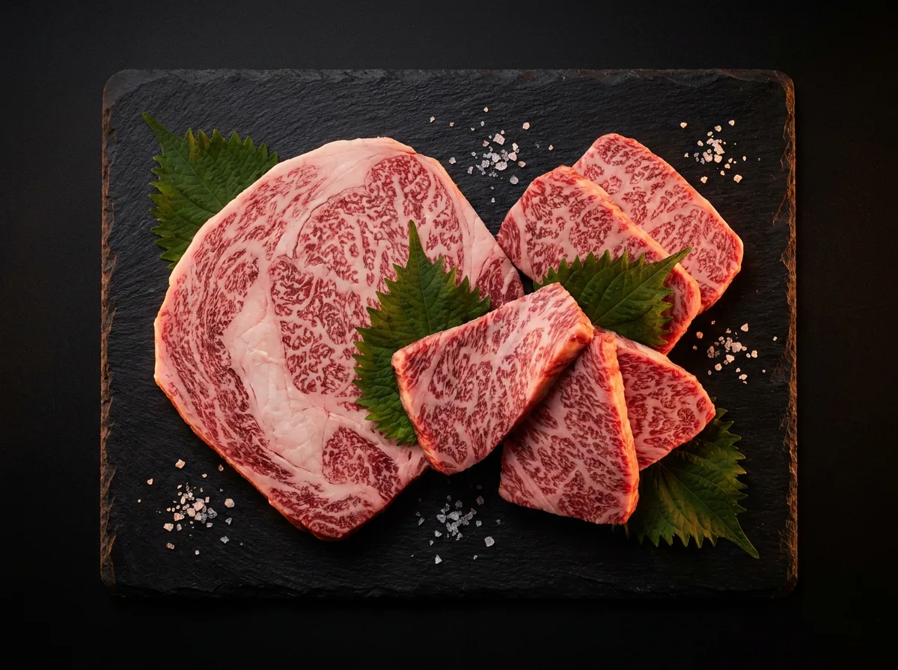
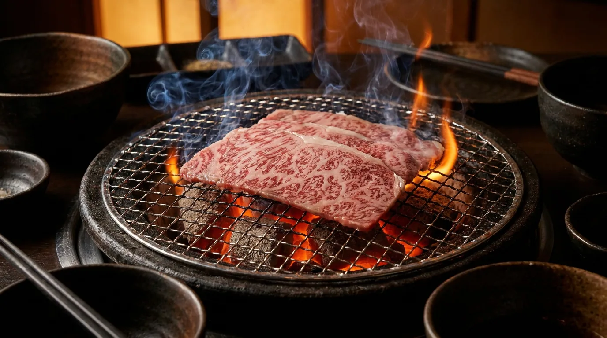
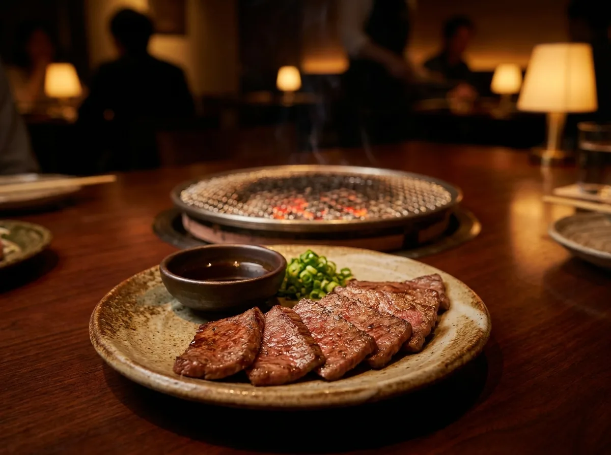
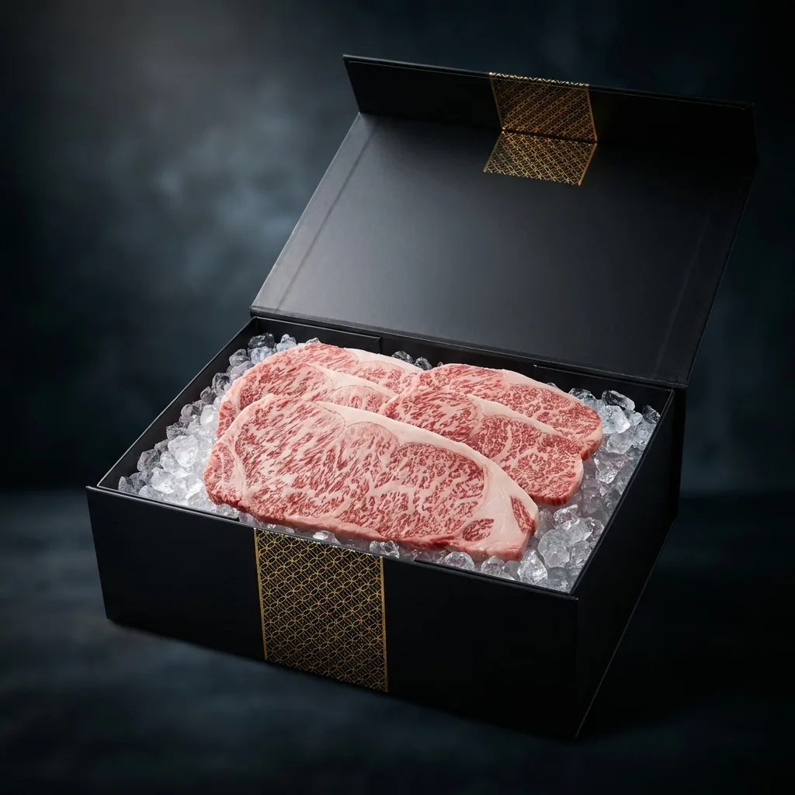

招牌霜降和牛肩胛
NT$680細密油花入口即化，燒肉的經典代表。中火快炙兩面，七分熟最是甘甜。
- 建議火候・中火
- 油花 A4


我們相信燒肉的靈魂，從選肉的那一刻就開始。炭韻只與信任的牧場與肉商合作，堅持單一部位分切、看得見的油花等級，並以濕式熟成喚出肉的甘甜。
從職人的刀工到冷鏈的每一度溫度，我們把專門店後場的講究，完整封進每一個送到你家的真空袋裡。
每個部位都標示建議火候與份量，新手也能輕鬆上手。價格以單份 150g 計。

招牌細密油花入口即化，燒肉的經典代表。中火快炙兩面，七分熟最是甘甜。
外脆內彈的迷人口感，劃花後大火炙烤，擠上檸檬就是專門店的開場。

油脂豐潤、香氣奔放的部位。炙烤至邊緣微焦，油香瞬間湧出。
橡果飼養的堅果香氣，油脂分布均勻。不沾醬就很有層次的一品。
帶骨炙烤鎖住肉汁，皮脆肉嫩。家庭聚餐的高 CP 值首選。
嚼勁與油香兼具，越嚼越香。逆紋分切，連長輩都讚不絕口。
從雙人小酌到家庭饗宴，份量與部位都幫你配好，開盒即烤。
兩人・約 450g
牛舌・肩胛・梅花
四至五人・約 1.2kg
六部位・牛豬雞海陸
送禮首選・約 1.5kg
A5 和牛・磁吸提盒
挑選部位或套組，結帳完成即進入備貨流程。
-18°C 全程冷鏈，保溫箱加乾冰，隔日到府。
食用前一晚移至冷藏慢解凍，鎖住肉汁風味。
依附上的火候卡煎烤，在家也有炭香梅納味。
「霜降肩胛油花漂亮到不行，在家烤就有專門店的水準，省下排隊時間。」
「過年送長輩頂級禮盒超有面子，磁吸提盒質感很好，長輩一直問哪買的。」
「附的火候卡很貼心，第一次在家烤牛舌就成功，孩子吃到停不下來。」
「冷凍宅配很扎實，乾冰到貨還很冰。希望多出一些海鮮部位。」
全程 -18°C 冷凍宅配，使用保溫箱與乾冰確保到府時仍維持冷凍狀態，全台本島隔日到貨。
建議食用前一晚移至冷藏室低溫慢解凍 8–12 小時，可最大程度保留肉汁與風味，避免直接室溫退冰。
可以。鑄鐵盤、氣炸鍋或平底鍋皆可，每份附職人火候建議卡，在家也能煎出漂亮的梅納香氣。
禮盒系列採用磁吸提盒與乾冰保鮮，並附手寫卡服務，適合中秋、過年與商務送禮。
全台本島單筆滿 NT$1,500 免冷凍運費，未滿酌收 NT$180；外島地區請來訊確認配送方式。
不必訂位、不必久候。挑一組炭韻，把燒肉專門店的儀式感搬回家。